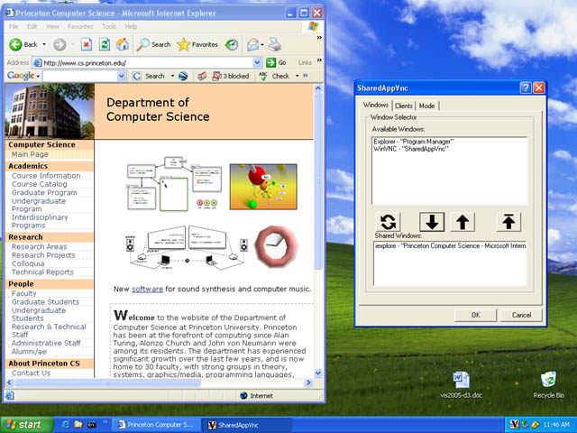
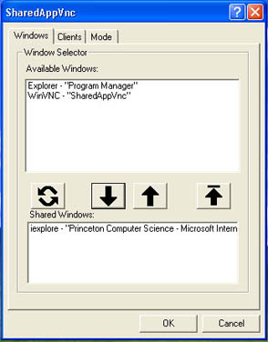
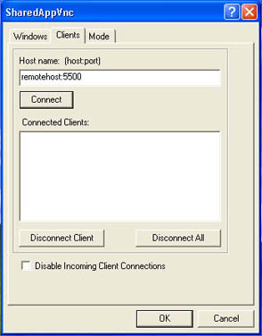
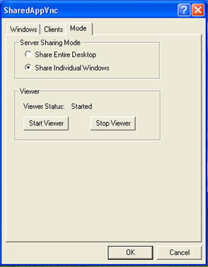
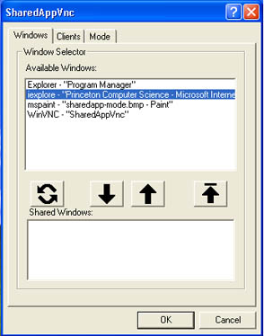
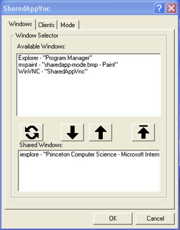

The Windows XP version of SharedAppVnc incorporates two pieces of software, a server and client. The server, which allows windows to be shared, is an executable called SharedAppVnc.exe. It can be started by double-clicking on the SharedAppVnc.exe file. The viewer is a java application called sharedAppViewer which can be started from the "Mode" tab of the SharedAppVnc.exe dialog box or invoked from the command line. The viewer receives and displays shared windows from remote servers.
Screenshot of the SharedAppVnc dialog box (right side) being used to share windows.

Start the server by double clicking on the SharedAppVnc.exe file .
It will open the dialog window interface and an icon will appear in the system tray on the start bar. The dialog window has three tabs:
- "Windows" for managing which windows are shared.
- "Clients" for establishing connections to remote viewer clients.
- "Mode" for selecting the sharing mode and starting the viewer application.
|  |  |  |
Viewer:
The Viewer process can be started from the "Mode" dialog tab. This allows for receiving shared windows from remote hosts. By default is listens for connections on port 5500.
The viewer can also be started as a command line process. See the SharedAppVnc Linux instructions for details.
Typically the server initiates a connection to the client. This can be done through the SharedAppVnc "Clients" tab in the dialog window. Enter the client you want to connect to such as "viewerhost:5500". The default port for the viewer client is 5500. After clicking "Connect" the client name will show up in the "connected clients" list box if the connection was successful.
Connect to remote host:
|
Enter host:port and click "Connect" |
Disconnect from remote host:
To disconnect from a client, select that client from the list box and click "Disconnect Client".
From the "Windows" tab you can share or hide windows. To share a window, click on the window name from the "Available Windows" listbox. Then click the down-arrow button. The window name will be moved to the "Shared Windows" listbox and it's pixels will be shared with all connected clients. Note: If the computer is running multiple monitors, only windows on the primary monitor will have their pixels shared.
Sharing a window:
|
 |
 |
||
|
|
Sharing-Tab Button Guide:
| Refresh the window lists | Share selected window | Hide selected window | Hide all windows |
Un-Sharing a window:
To hide a window, select the window from the "Shared Windows" listbox and then click the up-arrow button. To hide all shared windows simply click the up-arrow-bar button.
Changing the Sharing Mode:
From the "Mode" tab you can select between sharing modes. The default mode is to share individual windows. But you can also share the entire desktop by selecting that radio button.
|
Check the "Share Entire Desktop" box to share everything. |
Starting the Viewer:
From the "Mode" tab you can start or stop the Viewer.
This project was developed by Kai Li's research group at Princeton University Computer Science Department and funded by the SciDAC FusionGrid project.
Lead Developer: Grant Wallace 
Please use the Sourceforge "Tracker" functionality to report bugs or requests http://sourceforge.net/projects/shared-app-vnc/
Hosted by Sourceforge.net